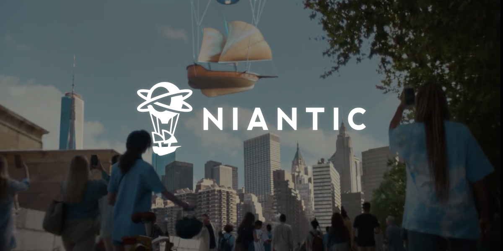
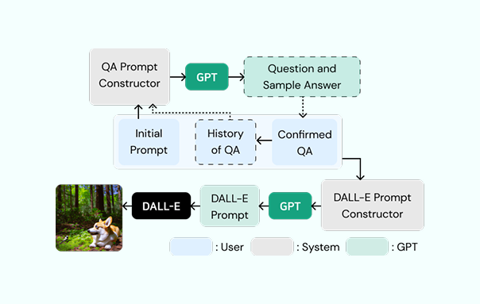
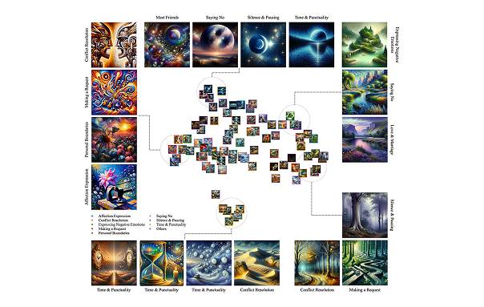
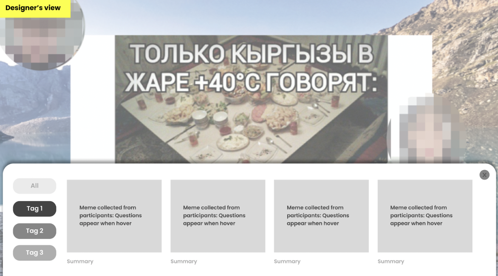

Hi, I'm Heather
I’m an interaction designer and UX researcher exploring
human-AI interaction and emerging technologies.
I turn emerging technical capabilities and user insights into
intuitive interactions, prototypes, and product experiences.
Selected Work

Designing Location Discovery for Spatial AR
Designed developer and consumer experiences across Niantic’s spatial computing ecosystem, including location discovery, AR localization, developer tools, and cross-device workflows.
View case study →
PromptCrafter: Crafting Text-to-Image Prompt through Mixed-Initiative Dialogue with LLM
PromptCrafter is a mixed-initiative system that helps users iteratively explore text-to-image model capabilities and craft effective prompts through step-by-step refinement and LLM-generated clarifying questions.
View project →
Unspoken into the Spoken: Visualizing Cultural Nuances in Intercultural Romantic Dyads through Generative AI-driven Art
This research explores how generative AI can surface unspoken cultural differences and foster mutual understanding in intercultural romantic relationships.
View project →
✶ CHI Extended Abstracts · 2022
Virfie: Enhancing Remote Togetherness with User-Created Scenarios for Virtual Group Selfie
This research explores how virtual group selfies can foster creative expression, social connection, and a sense of togetherness in remote settings.
View case study →
AI Explorations
Exploring new ways of creating and interacting with AI through rapid prototypes, generative media, and creative experiments.
Explore experiments →Experience
Education
Industrial Design, M.S. · CIxD Lab
Advisor: Youn-kyung Lim
Design, B.F.A.
Study Abroad · Computer Engineering
Industry Experience
UX Researcher · YouTube Rapid Research Team
UX Designer & Researcher · ARUX Team
Design Intern · Network Business Team
Off the Clock
I’m usually playing tennis or taking Coongi, my dog, for a walk! 🎾🐶